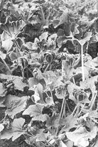

It's well into the light frost season, and this patch of summer squash continues to hear abundantly. Only the foliage has been damaged. The fruit and lower fruit-producing parts of the plants have not been injured. The soil around the squash is mulched with fine wood chips, which-when wet-tend to generate heat around the base of the plants. Little tricks like that can really stretch the ole growing season right into early winter.